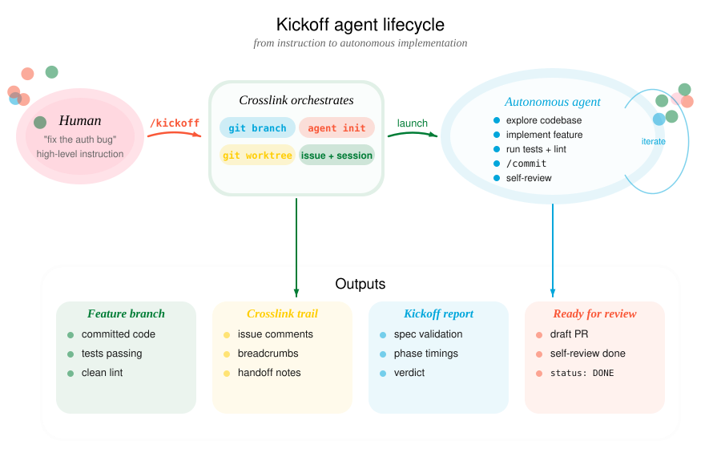

Kickoff: Autonomous feature agents
tl;dr
The /kickoff flow launches an autonomous Claude agent in an isolated git worktree to implement a feature in the background. You describe what you want, and a fully instrumented agent handles the rest – tracked through crosslink the entire way.
Overview
To start a new parallel feature agent, ask your agent:
/kickoff "github issue #37"or, from the CLI, use crosslink kickoff run for a task description:
crosslink kickoff run "add batch retry logic"or a design document:
crosslink kickoff run --doc .design/batch-retry-logic.md
Usage
You say / do:
“Build batch retry logic for the job queue.”
You describe the feature in natural language. Optionally specify a verification level.
→
Agent executes:
crosslink kickoff run "add batch retry logic"Creates branch, worktree, agent identity, prompt, and launches a background tmux session.
You say / do:
“Build it and make sure CI passes before you call it done.”
Adding verification means the agent will push, open a draft PR, and iterate until CI is green.
→
Agent executes:
crosslink kickoff run "add batch retry logic" \
--verify ciYou say / do:
“Build it, get CI green, and do a thorough self-review before finishing.”
The agent runs CI plus an adversarial review pass – checking for debug code, TODOs, and incomplete error handling.
→
Agent executes:
crosslink kickoff run "add batch retry logic" \
--verify thorough
What happens step by step
1. Feature branch
A branch is created from the current HEAD using the /feature skill:
"add batch retry logic" -> feature/add-batch-retry-logicA crosslink issue is created and labeled feature to track the work.
2. Git worktree
The /featree skill creates an isolated worktree at .worktrees/<slug>/ so the agent works on a separate copy of the repo. Your main working directory is untouched.
Inside the worktree, crosslink is initialized with a unique agent identity (e.g., m1--add-batch-retry-logic) so multi-agent lock coordination works.
3. Tool detection
Kickoff scans the project for build and test tooling and auto-configures which shell commands the agent is allowed to run:
| Detected File | Tools Allowed |
|---|---|
Cargo.toml |
cargo test, cargo clippy, cargo fmt |
package.json |
npm test, npm run, npx |
pyproject.toml |
uv run pytest, pytest |
justfile |
just |
Makefile |
make |
Read-only git commands and crosslink commands are always allowed. Git mutations (push, commit, merge) are gated by crosslink hooks.
4. Agent prompt (KICKOFF.md)
A comprehensive prompt is written to KICKOFF.md in the worktree. It includes:
- The feature description and any file/module references you provided
- Full crosslink workflow instructions (session start, work tracking, breadcrumbs)
- Project-specific test and lint commands
- A self-review checklist
- The verification level and CI instructions (if applicable)
This file is git-excluded so it doesn’t end up in commits.
5. tmux session
A detached tmux session is created and claude is launched inside it with the KICKOFF.md prompt and pre-approved tool permissions.
Feature agent launched.
Worktree: .worktrees/add-batch-retry-logic
Branch: feature/add-batch-retry-logic
Session: feat-add-batch-retry-logic
Approve trust: tmux attach -t feat-add-batch-retry-logic
Check status: /check feat-add-batch-retry-logicImportant: The agent waits for you to approve trust before it begins. Attach to the tmux session and approve the initial prompt.
6. Implementation script
Once trust is approved, the background agent:
- Starts a crosslink session and marks the feature issue as its focus
- Reads
CLAUDE.mdand explores relevant code - Documents its plan via
crosslink issue comment - Implements the feature (no stubs, full error handling)
- Records breadcrumbs with
crosslink session actionto survive context compression - Runs tests and linters
- Commits with
/commit(which also documents the commit on the crosslink issue) - Performs self-review against a checklist
- Writes
DONEto.kickoff-statuswhen finished - Ends the crosslink session with handoff notes
Controlled agent execution
Verification levels
--verify local (default)
The agent runs the project’s test suite and linter locally. No network operations.
--verify ci
After local tests pass, the agent also:
- Pushes the branch to
origin - Opens a draft pull request via
gh pr create --draft - Polls CI status every 30 seconds via
gh run list - If CI fails: reads logs with
gh run view --log-failed, fixes issues, re-pushes - Retries up to 5 times before giving up
--verify thorough
Everything from --verify ci, plus an adversarial self-review:
- Checks for debug code (
dbg!,console.log,println!,TODO,FIXME) - Checks for commented-out code and unintended file changes
- Verifies commit messages are clean and changes match the feature description
- Verifies complete error handling and no new warnings
- Fixes any issues found and pushes again
Safety constraints
The background agent operates under the same crosslink hook enforcement as interactive sessions:
- Always blocked:
git push,git merge,git rebase,git reset, and other destructive git commands (except when CI verification is enabled, where push is allowed) - Gated on active issue:
git commitrequires an active crosslink work item - Tool auto-approval: Only pre-approved tools run without prompting; anything else pauses the agent
- Isolated worktree: All changes are confined to
.worktrees/– your main checkout is untouched - Full audit trail: Every decision, discovery, and intervention is logged on the crosslink issue
Managing kickoffs
Monitoring with /check
While the agent works, use /check to monitor progress:
# Check a specific session
/check feat-add-batch-retry-logic
# Check all feature sessions in this repo
/check/check reads the tmux pane, the .kickoff-status sentinel file, and crosslink issue state to report whether the agent is working, waiting for input, errored, or done.
Listing active agents
See which agents are currently running across all execution backends:
You say / do:
“What agents are running right now?”
You want a quick view of all active agents – whether they are in worktrees, tmux sessions, or Docker containers.
→
Agent executes:
crosslink kickoff listOutput includes agent name, worktree path, branch, backend (tmux/docker), uptime, and current status.
Cleaning up
After reviewing the agent’s work, clean up the worktree and session infrastructure.
You say / do:
“Clean up all the finished agents.”
You want to remove worktrees, tmux sessions, and containers for agents that are done.
→
Agent executes:
crosslink kickoff cleanupPrunes stale worktrees, terminates dead tmux sessions, and removes stopped Docker containers. Only cleans up agents whose .kickoff-status is DONE or whose processes are no longer running.
Running multiple agents
You can launch multiple kickoff agents simultaneously on different features. Each gets its own worktree, branch, crosslink agent identity, and tmux session. Lock coordination via the crosslink/hub branch prevents two agents from working on the same issue.
/kickoff "add batch retry logic"
/kickoff "refactor config parser"
/kickoff "fix auth token refresh" --verify ci
# Monitor all at once
/checkSee Multi-Agent Coordination for details on distributed locking.